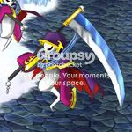
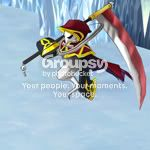
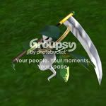
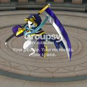
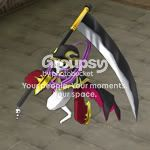
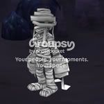
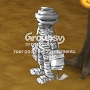
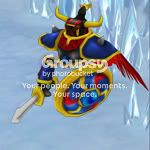
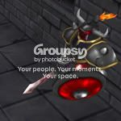
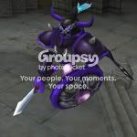

Undead
Skeleton
Level : 32
HP : 444
EXP / Job EXP : 345 / 255
Attribute :
Personality : Active
Map :
Undead Island
Item : Bone / Paper Note / Riped Magical Book /
Silver Medal /
Platinum Sword /
Skeleton Stamp
Skeleton Archer
Level : 35
HP : 400
EXP / Job EXP : 417 / 434
Attribute :
Personality : Active
Map :
North Endless /
Middle North Mountain /
North Dungeon / Ancient Dungeon[หาสมบัติในAncient]
Item : Bone / Paper Note / Rainbow Heart / Riped Magical Book /
Copper Medal /
Skeleton Archer Stamp
Skeleton Rapiere
Level : 52
HP : 2,250
EXP / Job EXP : 1,545 / 1,050
Attribute :
Personality : Link All
Map :
Undead Castle / Ancient Dungeon[วงกตแห่งมรณะ]
Item : Great Bone / Paper Note / Mold / Riped Magical Book /
Silver Medal
Skeleton Shooting
Level : 53
HP : 2,200
EXP / Job EXP : 1,293 / 1,215
Attribute :
Personality : Active
Map :
Undead Castle / Ancient Dungeon[คุกที่น่าสะพรึง วงกตแห่งมรณะ]
Item : Great Bone / Steel Arrow / Dark Arrow / Riped Magical Book /
Silver Medal
Resza Spector
Level : 40
HP : 1,800
EXP / Job EXP : 480/ 450
Attribute :
Personality : Chain Special Reaction
Map :
Undead Castle / Ancient Dungeon[วงกตแห่งมรณะ]
Item : Paper Note / High Magic Candy / Gas Balloon /
Copper Medal
Spector
Level : 45
HP : 2,200
EXP / Job EXP : 986 / 918
Attribute :
Personality : Non Active
Map :
Undead Castle
Item : Paper Note / High Magic Candy / Riped / Magical Book / Replica Crook Hat

Death
Level : 41
HP : 444
EXP / Job EXP : 750 / 480
Attribute :
Personality : Active
Map :
Frozen Cave /
Undead Island /
Northern Highland / Ancient Dungeon[เงาขาวที่ซ่อน ผู้อาศัยใต้ดิน หาสมบัติในAncient]
Item : Bone / Rainbow Heart /
Giant Steel Sword /
Triangle Bandage /
Death Stamp

Gaz
Level : 43
HP : 3,200
EXP / Job EXP : 6,120 / 3,060
Attribute :
Personality : Active
Map :
North Dungeon / Ancient Dungeon[หาสมบัติในAncient]
Item : Bone / Riped Magical Book /
Giant Steel Sword /
Triangle Bandage

Green Death
Level : 96
HP : 17,500
EXP / Job EXP : 6,000 / 6,000
Attribute :
Personality : Active
Map :
Baobab Forest(Night)
Item : High Magic Candy / Non-Use / Riped Magical Book / Skull

Grim Ripper
Level : 60
HP : 24,000
EXP / Job EXP : 16,500 / 19,500
Attribute :
Personality : ACtive
Map : Ancient Dungeon[ฝูงปิศาจ]
Item :
Soul Dust /
High Magic Candy /
Resurrection /
Used Book / Curse mask /
Death Scythe

Nightmare
Level : 62
HP : 25,000
EXP / Job EXP : 15,600/13,200
Attribute :
Personality : Active
Map : Ancient Dungeon[วงกตแห่งมรณะ ฝูงปีศาจ]
Item :
High Magic Candy /
Soul Dust /
Resurrection /
Used Book / Curse mask

Mira
Level : 26
HP : 360
EXP / Job EXP : 113 / 113
Attribute :
Personality : Active
Map :
Territory Cave B4F
Item : / Fabric / Paper Note / Great Cloth /
Silk /
Bandage(W) /
Mira Stamp

Mummy
Level : 27
HP : 420
EXP / Job EXP : 143 / 128
Attribute :
Personality : Link All
Map :
Undead Island
Item : / Fabric / Paper Note / Great Cloth /
Silk /
Bandage(W) /
Mummy Stamp
 Mummy Bain
Level
Mummy Bain
Level : 37
HP : 620
EXP / Job EXP : 540 / 480
Attribute :
Personality : Active
Map :
Main Floor 4F /
Light Tower A-5F
Item : Sticky / Antidote Fruit / Row / Silk /
Bandage(W) /
Red Talisman
Panzer Dead
Level : 22
HP : 280
EXP / Job EXP : 87 / 72
Attribute :
Personality : No
Map :
Utena Lake
Item : Wax /
Copper Medal
Living Dead
Level : 29
HP : 520
EXP / Job EXP : 213 / 213
Attribute :
Personality : Active
Map :
Undead Island /
Territory Cave B4F
Item : Veggy Juice / Mutant / Paper Note /
Copper Medal /
Silver Medal /
Living Dead Stamp
Rubunan
Level : 51
HP : 1,980
EXP / Job EXP : 1,278 / 1,238
Attribute :
Personality : Link Undead Type
Map :
Undead Castle
Item : Sticky / Paper Note / Wax /
Silver Medal
Evil Dead
Level : 51
HP : 1,980
EXP / Job EXP : 1,278 / 1,238
Attribute :
Personality : No
Map :
Undead Castle / Ancient Dungeon[วงกตแห่งมรณะ]
Item : Sticky / Paper Note / Wax /
Silver Medal

Living Armor
Level : 40
HP : 750
EXP / Job EXP : 735 / 465
Attribute :
Personality : Chain Reaction
Map :
North Dungeon
Item : Fabric Piece / Magic Potion / Riped Magical Book /
Nekomata(Momo) /
Living Armor Stamp
Noble Armor
Level : 60
HP : 2,600
EXP / Job EXP : 2,420 / 1,322
Attribute :
 Personality
Personality : Active
Map :
South Dungeon B1F-B3F
Item : Fabric Piece / Magic potion / Scarlet Jewel / Riped Magical Book

Necro Armor
Level : 60
HP : 2,800
EXP / Job EXP : 2,475 / 1,380
Attribute :
Personality : Link All
Map :
Undead Castle
Item : Fabric Piece /
Power Drink / Paper Note /
High Plate Mail(Red) /
High Plate Mail(Silver)
Red Living Armor
Level : 60
HP : 25,000
EXP / Job EXP : 16,800 / 14,400
Attribute :
Personality : Active
Map : Pandora's Box [Cash]
Item : Fabric Piece / Magic Potion / Riped Magical Book /
Nekomata(Momo)

Purple Living Armor
Level : 60
HP : 27,000
EXP / Job EXP : 22,500 / 16,500
Attribute :
Personality : Active
Map : Pandora's Box [Cash]
Item : Fabric Piece / Magic Potion / Riped Magical Book /
Nekomata(Momo)
Purple Specter
Level : 45
HP : 2,200
EXP / Job EXP : 870 / 810
Attribute :
Personality : Non Active
Map :
Hell Desert (Night)
Item : Paper Note / High Magic Candy / Replica Crook Hat
 Armor
Level
Armor
Level : 136
HP : 87,890
EXP / Job EXP : 155,400 / 174,750
Attribute :


 Personality
Personality : Non Active
Map :
Item : Titanium Lump / Soul Dust / Throat Candy / Droped Item1 /
Resurrection Potion /
Magic Crystal
 Armor(Red)
Level
Armor(Red)
Level : 148
HP : 95,680
EXP / Job EXP : 514,800 / 546,300
Attribute :
Personality : Non Active
Map :
Item : Titanium Lump / Soul Dust / Throat Candy / Droped Item1 /
Resurrection Potion /
Magic Crystal